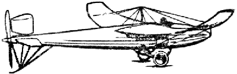

Victor Tatin's 1911 Aero-Torpille
The above image is from a rubber stamp on the back of an envelope I received a couple months ago from Bill Hannan. When I finally noticed it, I was struck by the elegance and beauty of the design and immediately got on the phone to find out more. Bill was out doing yard work, but he came to the phone and after a few moments realized that I might be serious about a model. He offered to send me what info he had, and assured me that it was indeed a real airplane, built and flown in France, before the Great War. Power was supplied by a Gnome rotary engine mounted just behind the pilot. A 20 foot long driveshaft spun the pusher prop in the tail.
The next day, I stopped in on George Benson, and found that he had a 20 year old peanut scale plan drawn by Donald Brown. We made a couple of quick copies at 100% and 150% scaling. A day or two later, Jason McGuire provided a Model Builder article, including the reproduced plan #1812 by J.F Frugoli. By the time I made more copies of Jason's material, a couple 3 views, an article and a few xeroxed pictures had arrived from Hannan. I was off and running...
Return to Model Index
Copyright 1998, Thayer Syme. All rights reserved